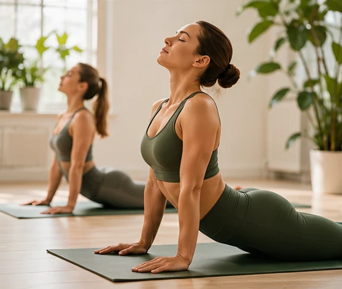
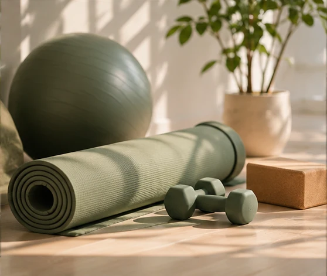
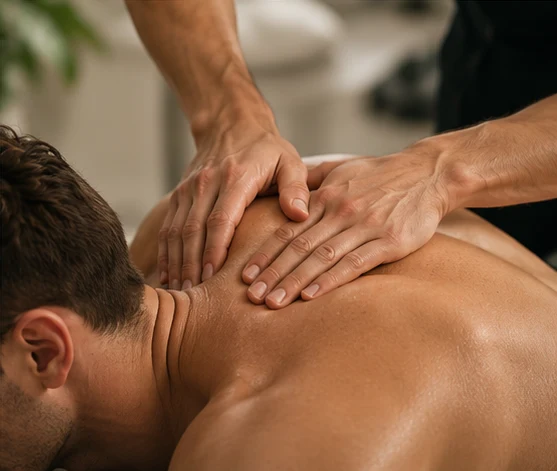

Group Pilates
Small, friendly hall classes in Burpham, Shere and West Clandon.
Supportive Pilates, movement classes and specialist massage therapy in Surrey, at home and online.

Classes and services drawn from the existing PACE website. Ask directly for up-to-date schedules and availability.
Small, friendly hall classes in Burpham, Shere and West Clandon.

Tailored one-to-one Pilates at the Bramley studio, online or in your home.

Targeted therapeutic work for sports, muscle tension and recovery.
PACE offers sports massage in Bramley or at home. The business also describes experience in deep tissue massage, dry needling and Kinesio taping.
Sarah Bowen became a Pilates teacher following her own experience with back pain. She combines Pilates teaching with an established sports massage background.
From group classes to one-to-one movement and massage, PACE aims to make sessions approachable and adapted to individual needs.
The existing PACE website lists selected online mat classes at £6, including mixed-ability and progressive classes. Check availability and current prices before booking.
View Original Class Details ↗Get in touch with PACE for class locations, private sessions, corporate fitness or massage enquiries. This preview does not accept payments or bookings.
Email Sarah ↗Call 07535 623989The original website currently displays an under-construction notice advising against paying for services. No payment processing is provided in this concept.